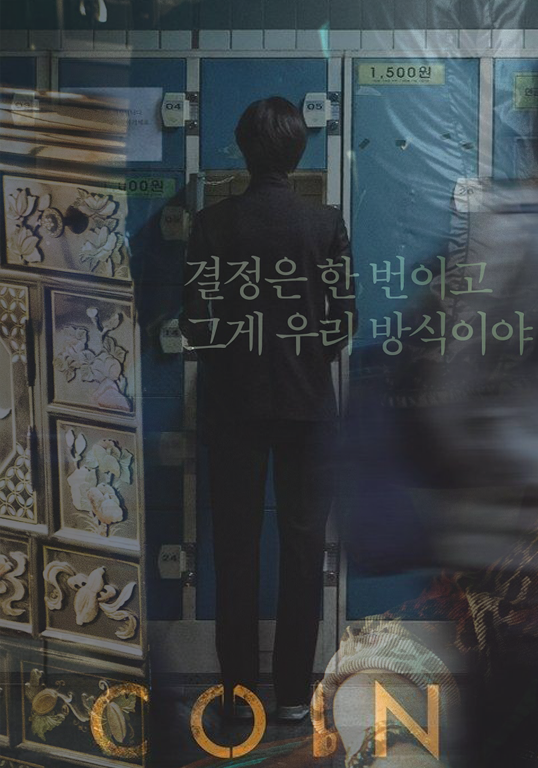

Coin Locker Girl
Han Jun-hee
A baby is found abandoned inside a coin locker at Western Seoul train station in 1996. A beggar takes her and names her Il-young (Kim Go-eun), then when she turns 10, she is taken by the corrupt detective who sells her off to a woman referred to simply as Mother as part of his loan payment (Kim Hye-soo). Mother is the boss of a loan shark and organ trafficking crime ring in Chinatown, Incheon; she has held on to her position of power by being dispassionate and calculating, and by keeping by her side only those of use to her. Mother decides to raise the young child after she shows toughness and smarts, eventually grooming her for a position in her organization as her personal debt collector.
One day, Il-young is given a task to collect debt from Suk-hyun (Park Bo-gum), the son of a debtor. Over the course of a few days, she is initially taken back by the boy who is not afraid of her and shows her kindness and openness from his own struggles from the past and current with unyielding spirit that she starts to develop special feelings for him. But when his father flees from the debt, Mother orders her to kill Suk-hyun. Il-young cannot go through with it and by making that single choice, she must now flee from the only family she has ever known.
The Korean title of this movie is "Chinatown", and it is somehow translated into "Coin Locker Girl". The Korean version of the poster is focusing on the main actress who is one of the most famous celebrity in Korea. On the U.S. version of the poster, I like how the setting matches the title of the movie "Coin Locker Girl". The coinlockers are usually placed in the subway stations. The actress' solitude is well illustrated on the poster as others are busy walking toward their destination.